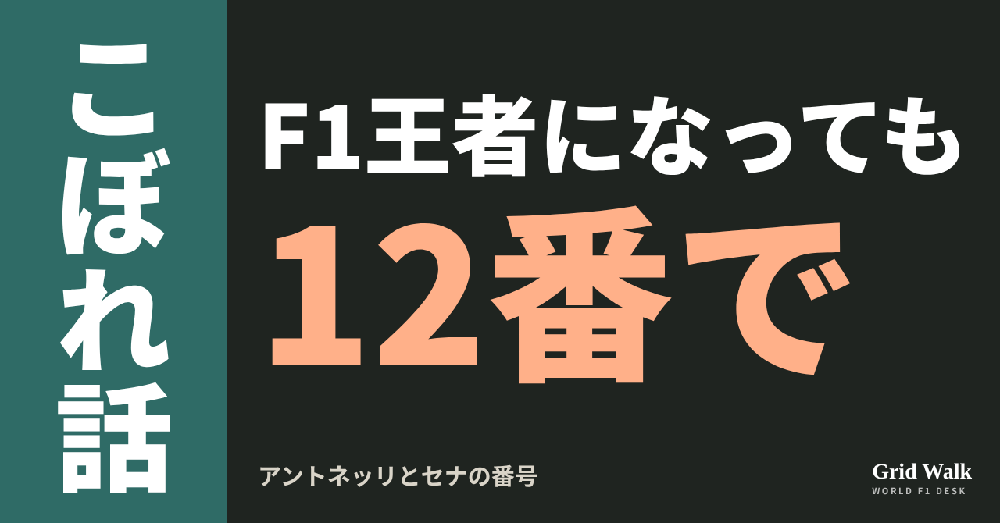
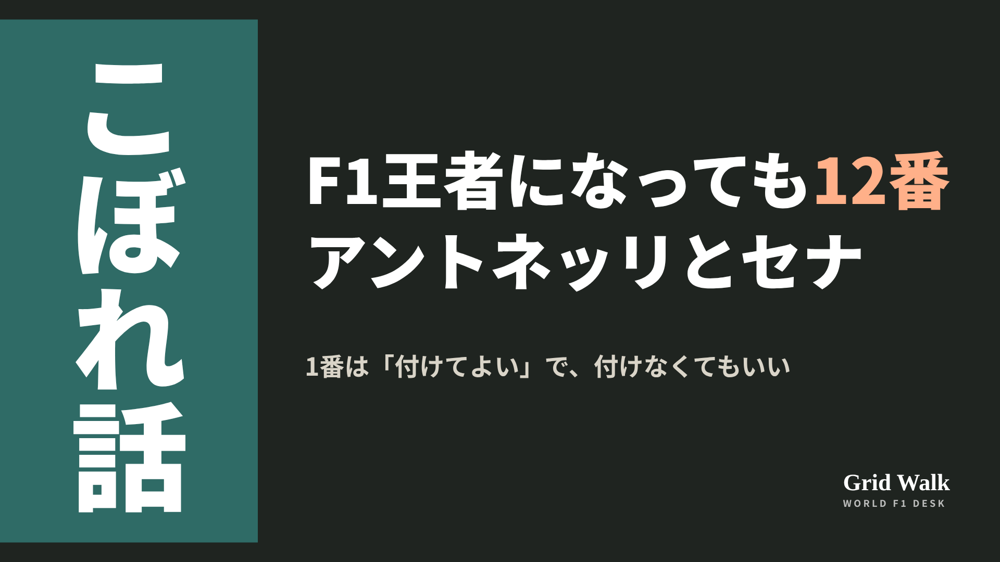
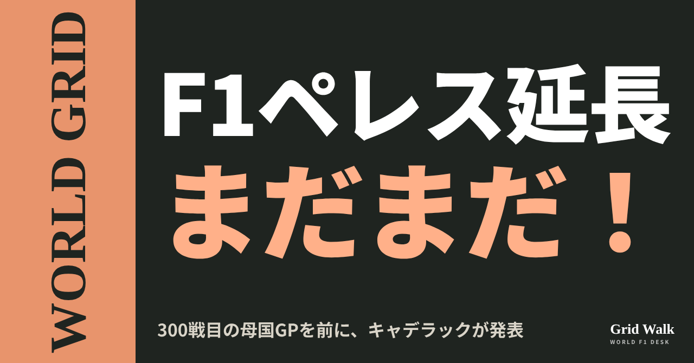
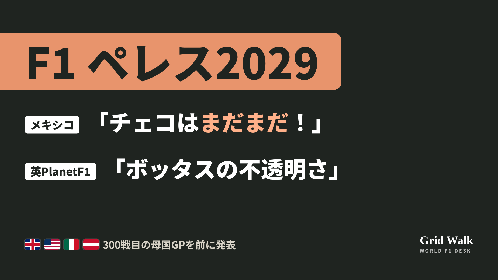
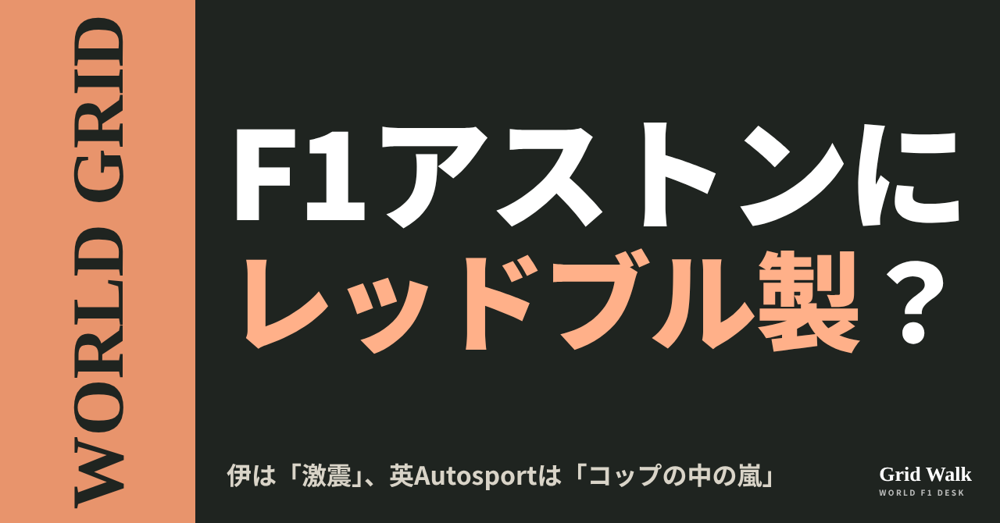
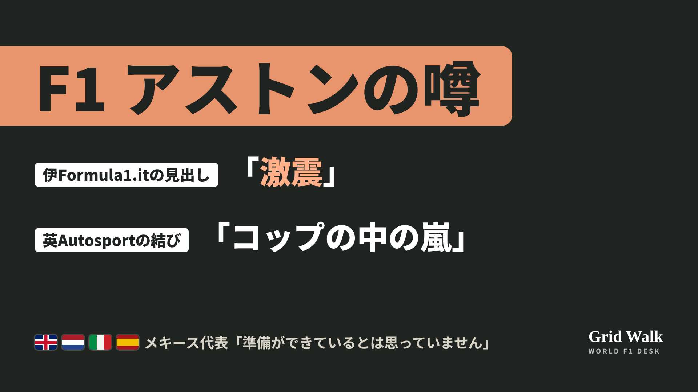

<meta charset="utf-8"><title>10/29のコラム note貼り付け</title>
<style>
/* one column of numbered paste steps; text steps vs image steps differ by marker */
:root{--bg:#F5F4F0;--card:#FFFFFF;--ink:#1D2321;--mute:#5F665F;--line:#DCDAD2;--btn:#1F5FBF;--btnok:#2E8B4F;--img:#E9F3EC;--imgink:#22663B;--sans:'IBM Plex Sans JP','Hiragino Sans','Noto Sans JP',sans-serif}
@media (prefers-color-scheme:dark){:root:not([data-theme="light"]){--bg:#171A19;--card:#202423;--ink:#ECEDE8;--mute:#A3AAA2;--line:#343937;--btn:#4D8BE6;--btnok:#3FA866;--img:#1E2C23;--imgink:#8FD3A6;color-scheme:dark}}
:root[data-theme="dark"]{--bg:#171A19;--card:#202423;--ink:#ECEDE8;--mute:#A3AAA2;--line:#343937;--btn:#4D8BE6;--btnok:#3FA866;--img:#1E2C23;--imgink:#8FD3A6;color-scheme:dark}
body{background:var(--bg);color:var(--ink);font-family:var(--sans);font-size:15px;line-height:1.75;padding:20px 16px 60px}
main{max-width:680px;margin:0 auto;display:grid;gap:28px}
header h1{font-size:22px;margin:0 0 6px;text-wrap:balance}
header p{margin:0;color:var(--mute);font-size:14px}
nav{display:flex;gap:8px;flex-wrap:wrap;margin-top:12px}
nav a{border:1px solid var(--line);border-radius:999px;padding:4px 14px;color:var(--ink);text-decoration:none;font-size:14px;background:var(--card)}
.part h2{font-size:18px;line-height:1.5;margin:0 0 12px;text-wrap:balance;display:flex;gap:10px;align-items:baseline;flex-wrap:wrap}
.tag{font-size:13px;background:var(--ink);color:var(--bg);border-radius:6px;padding:1px 9px}
.steps{list-style:none;margin:0;padding:0;display:grid;gap:12px}
.st{background:var(--card);border:1px solid var(--line);border-radius:12px;padding:12px;min-width:0}
.hd{display:flex;align-items:center;gap:8px;margin-bottom:8px}
.no{width:26px;height:26px;border-radius:50%;background:var(--btn);color:#fff;display:inline-flex;align-items:center;justify-content:center;font-size:13px;font-weight:700;flex:0 0 26px}
.im .no{background:var(--btnok)}
.hd em{font-style:normal;font-size:12px;background:var(--img);color:var(--imgink);border-radius:6px;padding:0 8px}
.bx{font-size:13.5px;line-height:1.7;border:1px solid var(--line);border-radius:8px;padding:8px 10px;max-height:110px;overflow:auto;overflow-wrap:anywhere}
.bx.tall{max-height:150px}.bx p{margin:0 0 6px}.bx h2{font-size:14px;margin:8px 0 4px}.bx a{color:var(--btn)}
.st img{display:block;width:100%;max-width:100%;border:1px solid var(--line);border-radius:8px}
.sub{font-size:12.5px;color:var(--mute);margin:6px 0 0}
.cp{width:100%;margin-top:8px;padding:12px;border:0;border-radius:10px;background:var(--btn);color:#fff;font:600 15px var(--sans);cursor:pointer}
.cp.ok{background:var(--btnok)}.cp.dl{background:var(--btnok)}.cp:focus-visible{outline:3px solid var(--ink);outline-offset:2px}
.xh{font-size:15px;margin:20px 0 10px}
.fb{font-size:13px;line-height:1.7;margin:8px 0 0;padding:8px 10px;border-radius:8px;background:var(--img);color:var(--imgink)}
.opts{display:grid;grid-template-columns:repeat(auto-fill,minmax(240px,1fr));gap:10px}
.opt{min-width:0}.opt img{display:block;width:100%;border:1px solid var(--line);border-radius:8px}
.ol{display:flex;align-items:center;gap:8px;margin-top:6px}.ol b{font-size:13px;flex:0 0 auto}.ol .on{font-size:12.5px;color:var(--mute);flex:1;min-width:0}.ol .cp{width:auto;flex:0 0 auto;padding:9px 14px}.ol .cp{margin:0;padding:9px}
.toast{font-size:13px;color:var(--mute);margin-top:6px}
</style>
<main><header><h1>10/29のコラム note貼り付け</h1><p>いま公開済みは3本です。青い番号は文章、緑は画像です。</p><nav><a href="#p1">1</a><a href="#p2">2</a><a href="#p3">3</a></nav></header><section class="part" id="p1"><h2><span class="tag">OFF GRID</span>王者になっても12番で　アントネッリ、1番より「セナの番号」</h2><p class="sub">サイトに公開：02:09</p><ol class="steps">
<li class="st im"><div class="hd"><span class="no">1</span><b>見出し画像</b><em>画像</em></div><button class="cp dl" data-img="img/antonelli-number-12-20261029.png" data-name="antonelli-number-12-20261029_見出し画像.png">ダウンロード</button></li>
<li class="st"><div class="hd"><span class="no">2</span><b>タイトル</b></div><div class="bx" id="p1t">王者になっても12番で　アントネッリ、1番より「セナの番号」</div><button class="cp" data-plain="p1t">タイトルをコピー</button></li>
<li class="st"><div class="hd"><span class="no">3</span><b>本文</b></div><div class="bx tall" id="p1r"><p>早ければメキシコシティGPで王座が決まるアントネッリ。王者になれば、翌年は車に「1」を付けられます。ところが本人は、王者になっても12番のまま走ると思う、とスイスのブリック紙に話しました。12は、あこがれのアイルトン・セナが初めて王座を取った年に付けていた番号です。</p><p>ブリック紙など元の記事へのリンクと、12番を選んだ理由を語った過去の記事はサイトで → <a href="https://f1gridwalk.github.io/lens/antonelli-number-12-20261029/?utm_source=note&amp;utm_campaign=antonelli-number-12-20261029">https://f1gridwalk.github.io/lens/antonelli-number-12-20261029/?utm_source=note&amp;utm_campaign=antonelli-number-12-20261029</a></p><h2>「目標にたどり着いても、12番で」</h2><p>ブリック紙が10月26日に出した記事で、アントネッリは来年の番号についてこう答えています。</p><blockquote><p>「まずメキシコで、自分の仕事を片付けないといけません。でも、目標にたどり着いても、そのまま12番で走ると思います」（アントネッリ、ブリック／スイス）</p></blockquote><p>この発言は、ドイツのMotorsport-Total.com（formel1.deに掲載）やGPblogも、ブリック紙の話として伝えました。サイトのニュース要約は https://f1gridwalk.github.io/news/nl-racingnews365-antonelli-number-12/ にあります。</p><p>決まりはこうです。ドライバーが自分で番号を選び、ずっと使う仕組みは2014年に始まりました（F1公式サイト）。いまのFIAの規則（一般規定A2.4.2）は「現王者は1番を使うことができる」という書き方です。付けるかどうかは王者しだいで、王座を守れなかったときのために、元の番号は取っておかれます。</p><h2>セナの12、王座の年も12</h2><p>F1公式サイトによると、セナは1985〜87年にロータスで12番を付け、1985年のポルトガルGPで初優勝しました。1988年にマクラーレンへ移っても12番のままで、その年に初めて王者になっています。ブリック紙は、そのあとセナが1番を付け、1989年に宿敵アラン・プロストが王座を取るまで使った、と書いています。</p><p>アントネッリは2025年のデビュー前、メルセデスの公式サイトのインタビューで、12番を選んだ理由を話していました（F1公式サイトが紹介）。</p><blockquote><p>「アイルトンが理由です」「F4ですぐに12を使い始めて、この番号でかなりうまくいきました」「メルセデスの育成に入ったのも12歳のときなので、それもあります」（アントネッリ、メルセデス公式サイト）</p></blockquote><p>F1公式サイトによると、2025年に12番を希望したのはアントネッリだけではなく、ジャック・ドゥーハンもでした。番号はアントネッリのものになり、ドゥーハンは7番を選んでいます。</p><h2>1番を断った王者は、これまでハミルトンだけ</h2><p>F1公式サイトは2025年12月の記事で、2014年以降に1番を断った王者はハミルトンだけだと書いています。F1公式サイトの2014年の記事によると、ハミルトンの44は、1995年にイギリスのカートの選手権で勝ったときの番号です。ちょっとした例外もありました。2018年の最終戦アブダビGPでは、正式な番号は44のまま、車の鼻先に「1」を付けることが認められました（F1公式サイト）。</p><p>反対に、今季のノリスは4番から1番に替えました。F1公式サイトは、ノリスがスカイスポーツ・ニュースにこう話したと伝えています。</p><blockquote><p>「伝統だし、理由があってそこにあるものです」（ノリス、スカイスポーツ・ニュース／イギリス）</p></blockquote><p>Motorsport-Total.comは、アントネッリが12番を続ければ、2027年は2021年以来の「1番のいないグリッド」になると書いています。2021年は、前年王者のハミルトンが44番で走った年です。</p><p>編集部としては、王者の印より、自分を形づくってきた番号を選ぶところに、アントネッリらしさが出ていると見ています。</p><p><strong>あなたが王者なら、1番を付けますか？ それとも自分の番号を守りますか？</strong></p><p>━━━━━━━━━━</p><p><strong>F1 Grid Walk では、世界のF1ニュースを毎日日本語でまとめています。</strong></p><p>海外の記事の要約を、毎日載せています。</p><p><a href="https://f1gridwalk.github.io/">https://f1gridwalk.github.io/</a></p><p>ほかの海外記事も読みたい方は、F1 Grid Walkへ。</p><p><a href="https://f1gridwalk.github.io/lens/antonelli-number-12-20261029/">https://f1gridwalk.github.io/lens/antonelli-number-12-20261029/</a></p><p>━━━━━━━━━━</p><p><a href="https://www.blick.ch/sport/formel1/kimi-antonelli-verraet-blick-seine-startnummer-2027/gerplpk">出典：Blick（スイス）</a></p><p><a href="https://www.formel1.de/news/news/2026-10-28/kimi-antonelli-neue-startnummer-als-formel-1-weltmeister">出典：formel1.de（Motorsport-Total.com）（ドイツ）</a></p><p><a href="https://sports.yahoo.com/articles/antonelli-reveals-whether-no-1-073000978.html">出典：GPblog（Yahoo Sportsの転載）（オランダ）</a></p><p><a href="https://www.fia.com/system/files/documents/fia_2026_f1_regulations_-_section_a_general_regulatory_provisions_-_iss_01_-_2025-12-10_0.pdf">出典：FIA（フランス）</a></p><p><a href="https://www.formula1.com/en/latest/article/7-iconic-driver-numbers-in-f1-and-the-stories-behind-them.4cWWWbaV2QsVUMfphatvEw">出典：F1公式サイト（イギリス）</a></p><p><a href="https://www.formula1.com/en/latest/article/from-following-idols-to-marking-birthdays-how-the-2025-f1-rookies-chose.3TmEDn3662Pxfe7ZQufptf.html">出典：F1公式サイト（イギリス）</a></p><p><a href="https://www.formula1.com/en/latest/article/norris-confirms-he-will-use-car-number-1-next-season-after-claiming-maiden.ACReb1X9OOwHKUb2u8hPk">出典：F1公式サイト（イギリス）</a></p><p><a href="https://www.formula1.com/en/latest/article/world-champion-hamilton-to-run-number-1-on-his-mercedes-in-abu-dhabi.6vWT0SZvvaOikawEIq4WsC">出典：F1公式サイト（イギリス）</a></p><p><a href="https://www.formula1.com/en/latest/features/2014/3/Whats-in-a-number-The-truth-behind-the-drivers-new-digits.html">出典：F1公式サイト（イギリス）</a></p></div><button class="cp" data-rich="p1r">本文をコピー</button></li>
<li class="st"><div class="hd"><span class="no">4</span><b>ハッシュタグ</b></div><div class="bx" id="p1h">#F1 #F1jp #アントネッリ #アイルトンセナ #メルセデス #メキシコGP #カーナンバー #ハミルトン #F1こぼれ話 #OFFGRID</div><button class="cp" data-plain="p1h">タグをコピー</button></li>
</ol><h3 class="xh">X</h3><ol class="steps">
<li class="st im"><div class="hd"><b>X用の画像</b><em>画像</em></div><button class="cp dl" data-img="img/x_antonelli-number-12-20261029.png" data-name="x_antonelli-number-12-20261029.png">ダウンロード</button></li>
<li class="st"><div class="hd"><b>① noteをシェアするときの文</b></div><div class="bx" id="p1x0">王者は翌年「1」を付けられるのに、アントネッリは12番で走ると思う、とスイスのブリック紙に。12は、セナが初めて王座を取った年の番号です。1番を断った王者は、これまでハミルトンだけ。noteにまとめました #F1jp #アントネッリ</div><button class="cp" data-plain="p1x0">コピー</button></li>
<li class="st"><div class="hd"><b>② ①への返信</b></div><div class="bx" id="p1x1">ほかの海外記事も読みたい方は、F1 Grid Walkへ。
https://f1gridwalk.github.io/lens/antonelli-number-12-20261029/?utm_source=x&amp;utm_campaign=antonelli-number-12-20261029</div><button class="cp" data-plain="p1x1">コピー</button></li>
<li class="st"><div class="hd"><b>③ ②への返信</b></div><div class="bx" id="p1x2">毎日の海外F1ニュースは、日本語でこちらにまとめています。
https://f1gridwalk.github.io/</div><button class="cp" data-plain="p1x2">コピー</button></li>
</ol></section><section class="part" id="p2"><h2><span class="tag">WORLD GRID</span>ペレス2029年まで　見出しは「まだまだ」と「ボッタスの不透明さ」</h2><p class="sub">サイトに公開：02:11</p><ol class="steps">
<li class="st im"><div class="hd"><span class="no">1</span><b>見出し画像</b><em>画像</em></div><button class="cp dl" data-img="img/perez-cadillac-2029-20261029.png" data-name="perez-cadillac-2029-20261029_見出し画像.png">ダウンロード</button></li>
<li class="st"><div class="hd"><span class="no">2</span><b>タイトル</b></div><div class="bx" id="p2t">ペレス2029年まで　見出しは「まだまだ」と「ボッタスの不透明さ」</div><button class="cp" data-plain="p2t">タイトルをコピー</button></li>
<li class="st"><div class="hd"><span class="no">3</span><b>本文</b></div><div class="bx tall" id="p2r"><p>キャデラックは10月28日（水）、セルジオ・ペレスとの契約を少なくとも2029年まで延ばしたと発表しました。地元メキシコシティGPの週で、日曜はペレスの300戦目です。同じ発表なのに、メキシコのClaroSportsは見出しで「まだまだ」と打ち、イギリスのPlanetF1は見出しにボッタスの名前を入れました。</p><p>英米メキシコなど7か国の見出しの違いと、元の記事へのリンクはサイトで → <a href="https://f1gridwalk.github.io/lens/perez-cadillac-2029-20261029/?utm_source=note&amp;utm_campaign=perez-cadillac-2029-20261029">https://f1gridwalk.github.io/lens/perez-cadillac-2029-20261029/?utm_source=note&amp;utm_campaign=perez-cadillac-2029-20261029</a></p><h2>発表で分かること</h2><p>F1公式によると、キャデラックはメキシコシティGPを前に、ペレスが少なくとも2029年までチームに残ると発表しました。</p><p>28日の発表で、ペレスはこう話しています。</p><blockquote><p>「F1のチームを一から作るには、時間と、たゆまない努力と、忍耐が必要です」「まだやるべきことはたくさんありますが、これからの3年間、全力で取り組みます」（ペレス、チームの発表／F1公式）</p></blockquote><blockquote><p>「F1で戦えるチームを作るのは、長い道のりです。チェコの才能とリーダーシップを確保したことで、1年目に築いたしっかりした土台の上に積み上げていくための継続性と覚悟が得られます」（ダン・タウリスCEO、チームの発表／Sky Sports・イギリス）</p></blockquote><p>PlanetF1は、金額は明らかにされていないとしたうえで、報酬は3年で大きく上がり、時が来たと感じれば、いつでもキャリアに区切りをつけられる契約上の自由もある、と報じました（要約はサイトに https://f1gridwalk.github.io/news/en-planetf1-perez-cadillac-2029/ ）。</p><h2>2年延長か、3年か</h2><p>年数は、記事と本人の言葉とで違って見えます。AP通信の見出しは「セルジオ・ペレス、2029年までの2年延長で苦戦するキャデラックに残ることを決める」。Sky Sportsも、元の契約は2027年末までとみられ、そこから2年延ばした、と書いています。一方、ペレス本人の言葉は「これからの3年間」。2027年から数えれば3シーズン、元の契約に足した分なら2年です。</p><p>元の契約の書き方も同じではありません。The Raceは、ペレスとボッタスの複数年契約は2027年より先には及ばないとみられていた、と書きました。F1公式の分析記事は、最初の契約には2027年以降のオプションが含まれていて、オプションを使うより新しい契約を話し合うほうが双方にとって理にかなっていた、と書いています。</p><h2>メキシコは「まだまだ」、英伯の一部は隣の席も</h2><p>メキシコのClaroSportsの見出しは「チェコ・ペレスはまだまだ！」で始まり、本文では、2027年より先の続投への疑問に終止符が打たれた、と書きました。Excélsiorは、チームのリーダーになったペレスの働きが実った契約だと書きました。</p><p>オーストリアのSpeedweekは「メキシコでの節目に合わせて」と300戦目に重ね、スペインのmotor.esは「驚きの長期契約」と打って、本文ではF1では珍しく長い契約だと書きました。オランダのGPblogは「大型の複数年延長」です。</p><p>イギリスでは、PlanetF1が見出しにボッタスの名前を入れました。「ペレスがキャデラックと新契約、ボッタスの不透明さは残る」。ブラジルのGrande Prêmio（英語版）も「ボッタスの席は不透明なまま」を見出しに入れています。RacingNews365の速報は逆に、名前を一人も出さず「キャデラック、2027年のF1ドライバー1人を複数年契約で確定」でした。</p><h2>ボッタスの2027年は</h2><p>RACERは、ボッタスには来季もペレスのチームメイトとしての契約があるとしたうえで、ハータが昇格する可能性は残っているとタウリスCEOがアメリカGPの週末に認めた、と書きました。PlanetF1は、情報筋の話として、チーム内ではボッタスの安定感を取りたい考えがあるとし、一方で、GMはハータの昇格に熱心だと報じています。Grande Prêmioは、今回の発表はボッタスの離脱もハータの昇格も確定させるものではない、と書いています。</p><p>編集部としては、同じ2029年までの契約でも、メキシコの記事はペレスがあと何年いるかを見出しで前に出し、イギリスとブラジルの一部の記事は隣の席のことも見出しに入れた、と見ています。</p><p><strong>2年延長と3年の約束、あなたならどちらを見出しにしますか？</strong></p><p>━━━━━━━━━━</p><p><strong>F1 Grid Walk では、世界のF1ニュースを毎日日本語でまとめています。</strong></p><p>海外の記事の要約を、毎日載せています。</p><p><a href="https://f1gridwalk.github.io/">https://f1gridwalk.github.io/</a></p><p>ほかの海外記事も読みたい方は、F1 Grid Walkへ。</p><p><a href="https://f1gridwalk.github.io/lens/perez-cadillac-2029-20261029/">https://f1gridwalk.github.io/lens/perez-cadillac-2029-20261029/</a></p><p>━━━━━━━━━━</p><p><a href="https://www.formula1.com/en/latest/article/perez-signs-contract-extension-to-remain-at-cadillac-until-at-least-2029.4oF3HFX8tK9qTWvU7wAXHM">出典：Formula1.com（イギリス）</a></p><p><a href="https://www.formula1.com/en/latest/article/analysis-why-cadillac-moved-quickly-to-secure-perezs-f1-future.4SIs2e4heBk8BrUrsodtaX">出典：Formula1.com（イギリス）</a></p><p><a href="https://www.skysports.com/f1/news/13604899/sergio-perez-signs-new-cadillac-f1-contract-until-2029-ahead-of-home-race-at-mexico-city-grand-prix">出典：Sky Sports（イギリス）</a></p><p><a href="https://www.planetf1.com/news/sergio-perez-cadillac-f1-contract-2029-driver-lineup">出典：PlanetF1（イギリス）</a></p><p><a href="https://racingnews365.com/cadillac-confirm-first-f1-driver-for-2027-on-multi-year-deal">出典：RacingNews365（イギリス）</a></p><p><a href="https://www.the-race.com/formula-1/cadillac-gives-perez-new-f1-deal-through-2029/">出典：The Race（イギリス）</a></p><p><a href="https://racer.com/2026/10/28/perez-signs-cadillac-extension-through-2029">出典：RACER（アメリカ）</a></p><p><a href="https://sports.yahoo.com/articles/sergio-p-rez-commits-struggling-155537965.html">出典：Yahoo Sports（AP通信）（アメリカ）</a></p><p><a href="https://www.clarosports.com/motor/formula-1/checo-perez-renovacion-cadillac-2029/">出典：ClaroSports（メキシコ）</a></p><p><a href="https://www.excelsior.com.mx/deportes/sergio-perez-renovacion-contrato-cadillac">出典：Excélsior（メキシコ）</a></p><p><a href="https://www.speedweek.com/a/formel-1/sergio-perez-verlaengert-cadillac-vertrag-mexiko-jubilaeum">出典：Speedweek（オーストリア）</a></p><p><a href="https://www.motor.es/formula-1/cadillac-renueva-checo-perez-contrato-largo-plazo-2026117305.html">出典：motor.es（スペイン）</a></p><p><a href="https://www.gpblog.com/en/breaking-news/sergio-perez-signs-major-multi-year-cadillac-f1-contract-extension">出典：GPblog（英語版）（オランダ）</a></p><p><a href="https://grandepremio.com/en/f1/cadillac-confirms-perez-on-new-f1-contract-through-2029-as-bottas-seat-remains-uncertain/">出典：Grande Prêmio（英語版）（ブラジル）</a></p></div><button class="cp" data-rich="p2r">本文をコピー</button></li>
<li class="st"><div class="hd"><span class="no">4</span><b>ハッシュタグ</b></div><div class="bx" id="p2h">#F1 #F1jp #セルジオペレス #ペレス #キャデラック #ボッタス #コルトンハータ #メキシコシティGP #WORLDGRID #海外F1</div><button class="cp" data-plain="p2h">タグをコピー</button></li>
</ol><h3 class="xh">X</h3><ol class="steps">
<li class="st im"><div class="hd"><b>X用の画像</b><em>画像</em></div><button class="cp dl" data-img="img/x_perez-cadillac-2029-20261029.png" data-name="x_perez-cadillac-2029-20261029.png">ダウンロード</button></li>
<li class="st"><div class="hd"><b>① noteをシェアするときの文</b></div><div class="bx" id="p2x0">ペレスがキャデラックと2029年まで。メキシコのClaroSportsは「まだまだ」、英PlanetF1は見出しに「ボッタス」。7か国の見出しを並べると、前に出したものが違いました。noteにまとめました #F1jp #ペレス</div><button class="cp" data-plain="p2x0">コピー</button></li>
<li class="st"><div class="hd"><b>② ①への返信</b></div><div class="bx" id="p2x1">ほかの海外記事も読みたい方は、F1 Grid Walkへ。
https://f1gridwalk.github.io/lens/perez-cadillac-2029-20261029/?utm_source=x&amp;utm_campaign=perez-cadillac-2029-20261029</div><button class="cp" data-plain="p2x1">コピー</button></li>
<li class="st"><div class="hd"><b>③ ②への返信</b></div><div class="bx" id="p2x2">毎日の海外F1ニュースは、日本語でこちらにまとめています。
https://f1gridwalk.github.io/</div><button class="cp" data-plain="p2x2">コピー</button></li>
</ol></section><section class="part" id="p3"><h2><span class="tag">WORLD GRID</span>アストンにレッドブル製エンジン？ 伊は「激震」英は「コップの中の嵐」</h2><p class="sub">サイトに公開：02:13</p><ol class="steps">
<li class="st im"><div class="hd"><span class="no">1</span><b>見出し画像</b><em>画像</em></div><button class="cp dl" data-img="img/aston-redbull-engine-rumour-20261029.png" data-name="aston-redbull-engine-rumour-20261029_見出し画像.png">ダウンロード</button></li>
<li class="st"><div class="hd"><span class="no">2</span><b>タイトル</b></div><div class="bx" id="p3t">アストンにレッドブル製エンジン？ 伊は「激震」英は「コップの中の嵐」</div><button class="cp" data-plain="p3t">タイトルをコピー</button></li>
<li class="st"><div class="hd"><span class="no">3</span><b>本文</b></div><div class="bx tall" id="p3r"><p>アストンマーティンが、ホンダからレッドブルのエンジンに乗り換えるのでは。アメリカGPのあと、各国の伝え方が分かれました。イタリアのFormula1.itは「激震」、イギリスのAutosportは「コップの中の嵐」。発言は同じです。</p><p>4か国の伝え方の違いと、噂の出どころの記事へのリンクはサイトで → <a href="https://f1gridwalk.github.io/lens/aston-redbull-engine-rumour-20261029/?utm_source=note&amp;utm_campaign=aston-redbull-engine-rumour-20261029">https://f1gridwalk.github.io/lens/aston-redbull-engine-rumour-20261029/?utm_source=note&amp;utm_campaign=aston-redbull-engine-rumour-20261029</a></p><h2>噂はどこから来たのか</h2><p>アストンマーティンのパワーユニットは、今季からホンダです。ホンダは2023年5月24日、2026年からアストンマーティンとワークス・パートナーシップを組むと発表しました（ホンダの発表）。発表文に、契約の年数は書かれていません。</p><p>乗り換えの話は、8月末にさかのぼります。オランダのF1Maximaalは8月27日、イタリアのAutoRacerの報道として、アストンマーティンがメルセデスとレッドブル・フォード・パワートレインズに、2028年からの供給について探りの話し合いをしていると伝えました。決定はまだない、という書き方です。</p><p>アメリカGPでの質問は、イギリスのBBCが起点だとAutosportは書いています。BBCのアンドリュー・ベンソン記者の読者Q&amp;Aに、レッドブル・フォードのパワーユニットにカスタマーチームは興味を持つか、という質問が出ました。答えは、いまパワーユニットを探しているチームはないとはっきり示していたのに、決勝後の取材での質問は「元のBBCの記事よりはるかに先まで」進んだ、という書き方です。</p><h2>同じ発言、違う見出し</h2><p>アメリカGPの後、レッドブルのローレン・メキース代表はこう答えました。</p><blockquote><p>「エンジンの性能について、望んでいない好意的な注目をたくさん集めました」「ほかのチームへの供給で、誰かと真剣な話をしているか？　いいえ。その準備ができているとは思っていません」（ローレン・メキース、RacingNews365／オランダ）</p></blockquote><blockquote><p>「この先5年、それで決まりか？　いいえ。この先5年に何が起きるかは分からないので」（ローレン・メキース、PlanetF1／イギリス）</p></blockquote><p>アストンマーティンのマイク・クラック（チーフトラックサイドオフィサー）の答えです。</p><blockquote><p>「言えるのは、私たちにはパートナー、長期のパートナーがいて、それはホンダだということだけです」「私たちが初めてレースに勝つときも、一緒にいると思います」（マイク・クラック、PlanetF1／イギリス）</p></blockquote><p>RacingNews365のオランダ語版は「望まぬ好意的な注目」を見出しにしました。記事によると、レッドブルの内燃エンジンはFIAの検証で最も強いとされ、ADUOの仕組みではアップグレードが認められない立場です。</p><p>PlanetF1の見出しは「メキースが、レッドブル製エンジン契約の可能性をめぐるアストンマーティンの憶測に答える」。イタリアのFormula1.itは、そのPlanetF1を出典に、「アストンマーティンに激震　ストロールがホンダとの別れを検討し、レッドブルに狙い」と打ちました。ただ本文は「ほかの選択肢を検討し始めたとみられる」という書き方で、見出しより慎重です。</p><p>オランダのGPblog（英語版）のクラックの記事は、ページの見出しが「レッドブルの噂を否定し、ホンダを支持」なのに、SNSで共有されるときの題は「レッドブルとの話し合いを排除せず」。向きが逆です。Formula1.itとスペインのMotor.esは、どちらもかつてのマクラーレンとホンダの例を持ち出しています。</p><h2>事実と報道を分けると</h2><p>確かなのは、ホンダとのワークス契約と、2人の答えです。ストロール会長がほかのメーカーに接触したというのは、報道の段階です。PlanetF1は、変えるとしても最も早くて2028年とし、ほかのメーカーとの連絡は乗り換えを狙うより、つながりを保つためのものだと情報筋は言う、とも書きました。</p><p>アストンマーティンのエイドリアン・ニューウェイ代表は、アメリカGP金曜のFIA会見でこう話しました。</p><blockquote><p>「繰り返しになりますが、彼らは素晴らしい会社です。すぐに加速すると、全面的に信じています」（エイドリアン・ニューウェイ、FIA会見）</p></blockquote><p>別の質問には、ホンダは今季の進み具合に「おそらく少しがっかりしている」とも答えています。</p><p>編集部としては、8月のイタリア発の話とBBCのQ&amp;Aが、アメリカGPの取材で一つの噂にまとまって見えたのだと見ています。2人の言葉はどの国でも同じで、違ったのは見出しとまとめ方でした。</p><p><strong>この噂、「激震」と「コップの中の嵐」のどちらに見えますか？</strong></p><p>━━━━━━━━━━</p><p><strong>F1 Grid Walk では、世界のF1ニュースを毎日日本語でまとめています。</strong></p><p>海外の記事の要約を、毎日載せています。</p><p><a href="https://f1gridwalk.github.io/">https://f1gridwalk.github.io/</a></p><p>ほかの海外記事も読みたい方は、F1 Grid Walkへ。</p><p><a href="https://f1gridwalk.github.io/lens/aston-redbull-engine-rumour-20261029/">https://f1gridwalk.github.io/lens/aston-redbull-engine-rumour-20261029/</a></p><p>━━━━━━━━━━</p><p><a href="https://www.planetf1.com/news/aston-martin-red-bull-engines-laurent-mekies-supply-speculation">出典：PlanetF1（イギリス）</a></p><p><a href="https://racingnews365.nl/red-bull-reageert-op-aston-martin-geruchten-na-ongewenste-positieve-publiciteit">出典：RacingNews365（オランダ語版）（オランダ）</a></p><p><a href="https://racingnews365.com/red-bull-denies-serious-conversations-with-f1-rival-over-supplying-engines">出典：RacingNews365（英語版）（オランダ）</a></p><p><a href="https://www.autosport.com/f1/news/why-aston-martin-and-red-bull-were-asked-about-an-unlikely-f1-engine-partnership/10869017/">出典：Autosport（イギリス）</a></p><p><a href="https://www.formula1.it/news/33534/1/terremoto-aston-martin-stroll-valuta-l-addio-a-honda-e-punta-red-bull">出典：Formula1.it（イタリア）</a></p><p><a href="https://www.motor.es/formula-1/red-bull-rumores-asociacion-aston-martin-recibido-publicidad-positiva-motor-2026117294.html">出典：Motor.es（スペイン）</a></p><p><a href="https://www.gpblog.com/en/news/aston-martin-refuses-to-deny-talks-with-red-bull">出典：GPblog（英語版）（オランダ）</a></p><p><a href="https://sports.yahoo.com/articles/aston-martin-refuses-deny-talks-193000252.html">出典：GPblog（Yahoo Sports 転載）（オランダ）</a></p><p><a href="https://www.f1maximaal.nl/geruchtencircuit/aston-martin-is-in-gesprek-met-red-bull-ford-powertrains-met-het-oog-op-een-deal">出典：F1Maximaal（オランダ）</a></p><p><a href="https://global.honda/en/newsroom/news/2023/c230524eng.html">出典：Honda（公式）（日本）</a></p><p><a href="https://www.fia.com/news/f1-2026-united-states-grand-prix-friday-press-conference-transcript">出典：FIA（フランス）</a></p></div><button class="cp" data-rich="p3r">本文をコピー</button></li>
<li class="st"><div class="hd"><span class="no">4</span><b>ハッシュタグ</b></div><div class="bx" id="p3h">#F1 #F1jp #アストンマーティン #ホンダ #レッドブル #メキース #パワーユニット #F1の噂 #WORLDGRID</div><button class="cp" data-plain="p3h">タグをコピー</button></li>
</ol><h3 class="xh">X</h3><ol class="steps">
<li class="st im"><div class="hd"><b>X用の画像</b><em>画像</em></div><button class="cp dl" data-img="img/x_aston-redbull-engine-rumour-20261029.png" data-name="x_aston-redbull-engine-rumour-20261029.png">ダウンロード</button></li>
<li class="st"><div class="hd"><b>① noteをシェアするときの文</b></div><div class="bx" id="p3x0">アストンマーティンにレッドブル製エンジン？ イタリアのFormula1.itは「激震」、英Autosportは「コップの中の嵐」。噂の出どころから各国の伝え方まで、noteにまとめました #F1jp #アストンマーティン</div><button class="cp" data-plain="p3x0">コピー</button></li>
<li class="st"><div class="hd"><b>② ①への返信</b></div><div class="bx" id="p3x1">ほかの海外記事も読みたい方は、F1 Grid Walkへ。
https://f1gridwalk.github.io/lens/aston-redbull-engine-rumour-20261029/?utm_source=x&amp;utm_campaign=aston-redbull-engine-rumour-20261029</div><button class="cp" data-plain="p3x1">コピー</button></li>
<li class="st"><div class="hd"><b>③ ②への返信</b></div><div class="bx" id="p3x2">毎日の海外F1ニュースは、日本語でこちらにまとめています。
https://f1gridwalk.github.io/</div><button class="cp" data-plain="p3x2">コピー</button></li>
</ol></section></main><script>
function done(b,msg){const t=b.dataset.t||b.textContent;b.dataset.t=t;b.classList.add('ok');b.textContent=msg||'コピーしました';setTimeout(()=>{b.classList.remove('ok');b.textContent=t},2000)}
function selectEl(el){const r=document.createRange();r.selectNodeContents(el);const s=getSelection();s.removeAllRanges();s.addRange(r)}
async function rich(el,b){
  try{await navigator.clipboard.write([new ClipboardItem({'text/html':new Blob([el.innerHTML],{type:'text/html'}),'text/plain':new Blob([el.innerText],{type:'text/plain'})})]);done(b);return}catch(e){}
  selectEl(el);let ok=false;try{ok=document.execCommand('copy')}catch(e){}
  if(ok){getSelection().removeAllRanges();done(b)}else{done(b,'選択しました。コピーしてください')}}
async function plain(el,b){
  try{await navigator.clipboard.writeText(el.innerText);done(b);return}catch(e){}
  selectEl(el);let ok=false;try{ok=document.execCommand('copy')}catch(e){}
  if(ok){getSelection().removeAllRanges();done(b)}else{done(b,'選択しました。コピーしてください')}}
let dlns=null;(async()=>{try{dlns=await window.claude?.use?.("downloads")}catch(e){dlns=null}})();
async function img(src,b){
  b.dataset.t=b.dataset.t||b.textContent;
  if(!dlns){try{dlns=await window.claude?.use?.("downloads")}catch(e){}}
  if(!dlns){b.textContent='ダウンロードできませんでした';setTimeout(()=>{b.textContent=b.dataset.t},3500);return}
  try{const blob=await fetch(src).then(r=>r.blob());b.textContent='保存の確認を開いています…';
    await dlns.save({filename:b.dataset.name,data:blob});done(b,'ダウンロードしました')}
  catch(e){const c=e&&e.code;b.textContent=c==='declined'?'キャンセルしました':c==='rate_limited'?'少し待ってからもう一度押してください':'ダウンロードできませんでした';setTimeout(()=>{b.textContent=b.dataset.t},3500)}}
document.querySelectorAll('.cp').forEach(b=>b.addEventListener('click',()=>{
  if(b.dataset.rich)rich(document.getElementById(b.dataset.rich),b);
  else if(b.dataset.plain)plain(document.getElementById(b.dataset.plain),b);
  else img(b.dataset.img,b)}));
</script>